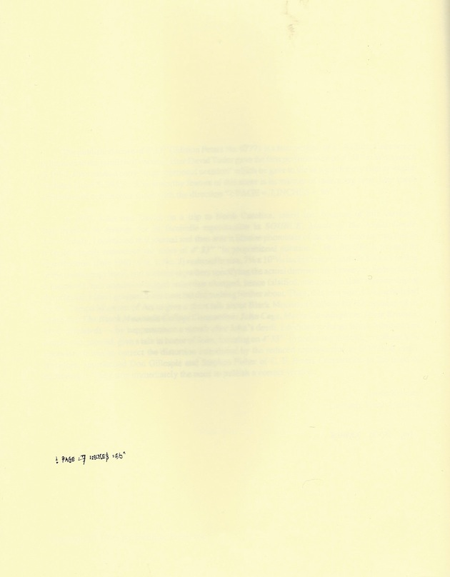
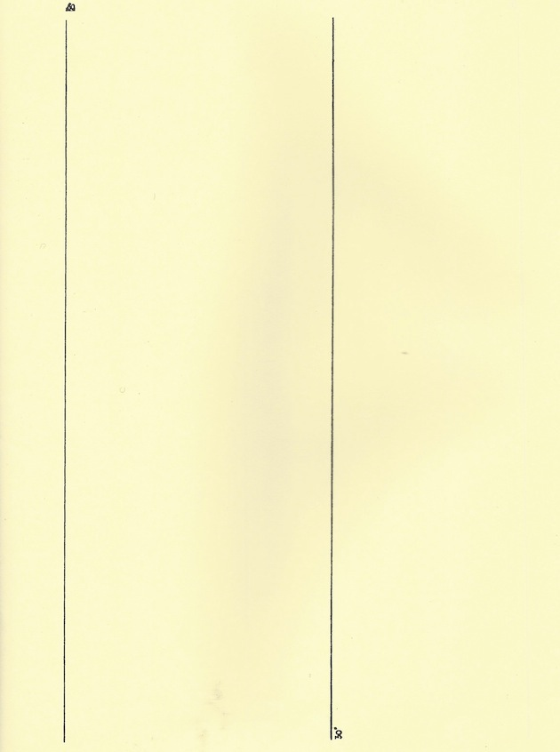
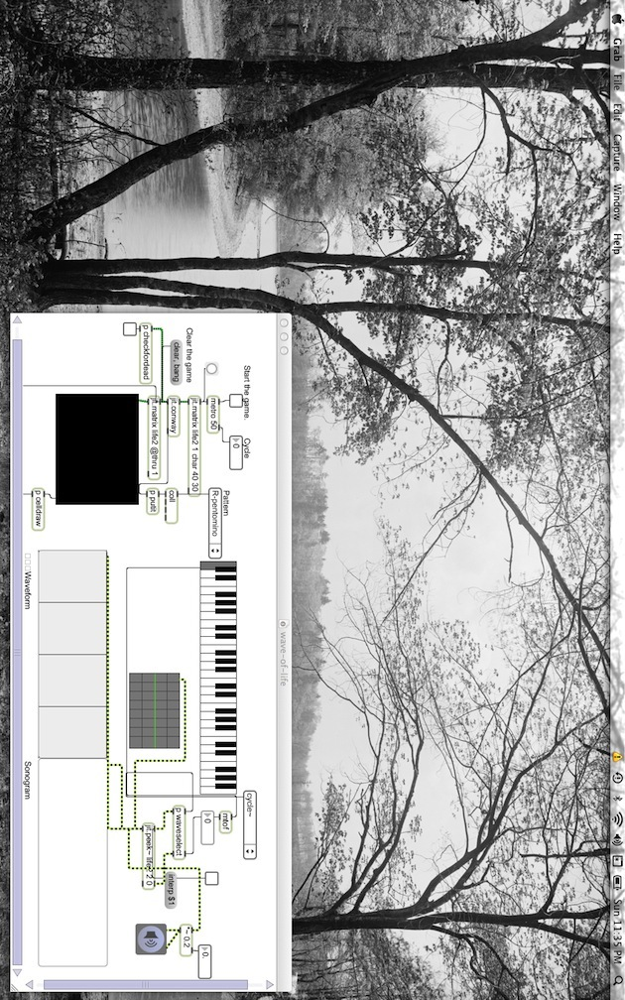

Matthew J.X. Doyle
Recording John Cage's 4’33”
Dedicated to the memory of John Cage, in celebration of his 100th birthday.
“Through the phonograph record, time gains a new approach to music.It is not the time in which music happens, nor is it the time which music monumentalizes by means of its ‘style.’ It is time as evanescence, enduring in mute music.”
– Theodor Adorno
“[At this point in the MP3 encoding process] the frequency spread for each frame is compared to mathematical models of human psychoacoustics, which are stored in the codec as a reference table. From this model, it can be determined which frequencies need to be rendered accurately, since they’ll be perceptible to humans, and which ones can be dropped or allocated fewer bits, since we wouldn’t be able to hear them anyway. Why store data that can’t be heard?”
– Scot Hacker
“There is no such thing as an empty space or an empty time.”
– John Cage

Figure 1

Figure 2

Figure 3
John Cage’s 4’ 33” (1952) was performed by Matthew J.X. Doyle using the 1953 proportional notation version of the score (figs. 1, 2). The performance took place in the performer’s home at 42.386505, -71.307003 on December 16th, 2012 at 11:36 PM EST, and the piece was performed using Keisuke Oyama’s wave-of- life.maxpat patch, a synthesizer based on Conway’s Game of Life (see fig. 3, patch viewable/downloadable at https://vimeo.com/35761982) in Max/MSP Runtime Version 5.0.6.
The piece was recorded in Apple Lossless Codec from Max/MSP’s raw PCM source audio using a trial version of Audio Hijack Pro v2.10.0 running on an Apple Macbook Pro (2.4 GHz Intel Core i7, 4 GB 1333 MHz DDR3, Mac OS X Lion 10.7.2).
From there, the lossless audio was converted to .wav in Audacity 2.0.2 (http:// audacity.sourceforge.net/), uploaded to mediafire.com, downloaded by Matt Jones at Pirates Press (1301 17th Street, San Francisco, CA, 94107) where it was mastered, and pressed onto 7x7 transparent flexi vinyl.
Very special thanks to Laura Kuhn at the John Cage trust, and Gene Caprioglio at Editions Peters for assisting with the mechanical licensing for this performance and recording, as well as gracious permission to scan and reproduce pages from the John Cage centennial edition of the 4’ 33” score.